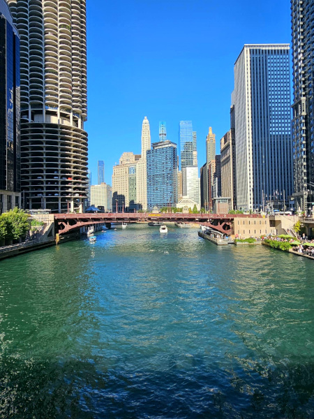

JPG Format Example

About This Image
This is the Clark Street Bridge in Chicago. My wife took this photograph on a trip for work in July of 2026. Click the thumbnail to see the full image.
Why JPG Format?
JPG is ideal for photographic images like this one, where the lossy compression keeps the file size small while preserving the visual detail that matters. Also, her phone saves photos in this format by default.
Image source: Original photo by Rebecca Daniels